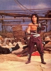

Also known as:Wu du (original title)
Country:Hong Kong, 2 minutes
Spoken languages:Mandarin
Genres:Action, Drama, Mystery
Director(s):Cheh Chang
Writer(s):Kuang Ni, Cheh Chang
Video Codec:Unknown
Number: 315


Certification:R
Storyline:
The final student of a dying martial arts master is instructed to locate the previous five students and defeat any evil ones among them.
Cast: 

Medium: Original DVD,
Loaned: No
Aspect ratio: Unknown